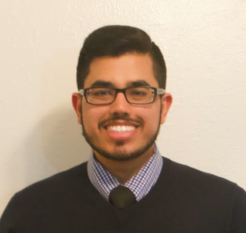

 Born and raised in Karachi, Pakistan, my family and I moved to Houston, Texas when just thirteen years old. My family was so hell bent on making sure that I don't miss any school during our big move, they already had me enrolled in a junior high before we moved here.
We landed at George Bush Intercontinental Airport at 5:30 pm on April 21, 2008 and just within two short hours of being in the United States, I was standing outside my new school where I would be coming the next day to take a bunch of tests that I hadn't prepared for. But, looks like I perservered through the plethora of exams the proctors threw at me and before I knew it I was applying to colleges, not knowing what was waiting ahead for me.
I just graduated from Texas A&M University, College Station, Texas after spending 6 long and tough years there, mostly browsing Netflix on what new show to start next. Well, that's partially true...however, I did get my Bachelor of Science degree in Biomedical Sciences with minors in Psychology and Neuroscience (which, I flick off every morning before starting my day). I also did manage to rack up about $35,000 in student loans which I have no idea how to pay for.
But, in all seriousness, I am very excited, albeit scared af as to how I'm going to become a "web developer" after graduating from this awesome boot camp and what life holds for me in the future.